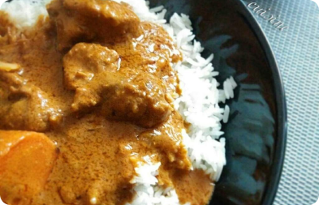

<ion-header>
  
  <ion-toolbar  style="background-color: #FCF7F4;"class="insta-feed-header" color="">
    <ion-buttons slot="start">
      <ion-button>
        <ion-icon name="cart" style="color: #E88441;"></ion-icon>
      </ion-button>
    </ion-buttons>
    
      
      
    <ion-buttons slot="end">
      
      <ion-button routerLink="/recherche">
        <ion-icon name="Search" style="color: #E88441;"></ion-icon>
      </ion-button>
    </ion-buttons>
  </ion-toolbar>
</ion-header>

<ion-content >
  <div>
<ion-card>

</ion-card>
</div>
</ion-content>
